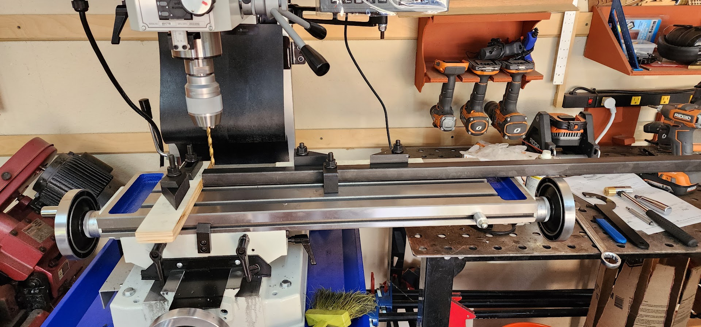
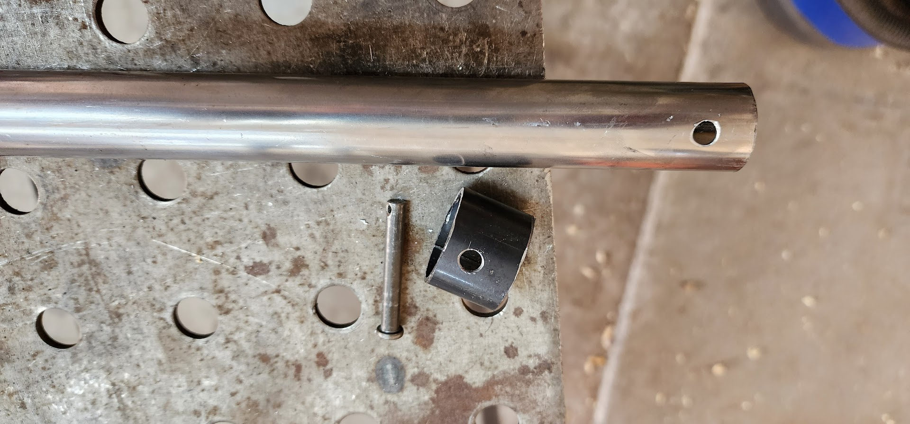

Concept Drawings

Front Props

There will be a total of 10 front props, each consisting of two pipes with a diameter of 10 inches, selected from five different sizes. These pipes range from 11 feet to 6 feet in 15-inch increments. The props are suspended one foot from the ground, using a pipe positioned 18 inches from the top of each prop. This configuration enables the props to swing back and forth.
11 (132), 9.75 (117), 8.5 (102), 7.25 (87), 6 (72) | feet (inches)

 Assembled
Assembled
 Top down view
Top down view
 Disassembled
Disassembled
Two fixed caster wheels are mounted on the frame of the props, enabling them to be tilted and rolled like a dolly. The frame is designed to be disassembled, allowing for minimal space occupation during transportation in a truck or trailer.
Back Props

There will be a total of 7 back props, with each prop comprised of six pipes, each having a diameter of 10 inches. These pipes are hung from a frame with 12-inch center to center. The frame itself has a footprint of 70 inches by 60 inches. The pipes range in length from 11 feet to 5 feet, with 15-inch increments. The props are suspended one foot from the ground.

The frames are designed with two fixed 10-inch wheels at one end and two metal feet at the other. The props can be moved by lifting the end with the feet and maneuvering them like a wheelbarrow.

The six pipes will be detached from the frame, and the frame itself will break down into smaller parts for transportation.
Transporting
The goal this year is to fit all the props, along with our percussion electronics, onto a 20-foot cargo trailer. Above, I have drawn a typical 20-foot cargo trailer and depicted the footprints of four speakers, a sound mixer board cart, and two keyboard carts using blocks.
Precussion Electronics
- Tall speaker 32x32x66" (white)
- Short speaker 27x28x62" (green)
- Sound mixer cart 30x50x49" (blue)
- Keyboard cart 24x69x43" (red)
I was able to arrange all 45 organ pipes end-to-end and stack them in three stacks on one side of the trailer. This arrangement allows for all the electronics to be accommodated on the other side. However, there are a few considerations to keep in mind.
Firstly, the weight of the props alone is not sufficient to offset the weight of the electronics. Therefore, placing all the electronics at the back of the trailer could be unsafe, as it may cause the trailer to fishtail.
Secondly, it is important to be able to load and unload the electronics without having to move any of the props. By achieving this goal, we will be able to leave the props on the trailer between contests and still use the trailer for
football games where we would not need to unload or use the props.
I still need to work out where all the prop frame pieces will be stored, but I believe there is still enough space remaining in the trailer for these pieces. It is still on my list to design a rack to hold the organ pipes
against the trailer wall.
Build Blog
August 27, 2023
This week, things kicked into high gear, starting with the placement and collection of the metal necessary for constructing the 7 rear props and 10 front prop frames. The order contained over 800 individual metal pieces.
During this week, the final CAD drawings were also generated. These drawings are instrumental in guiding the placement of all the holes and other fabrication tasks.
The work has started to drill the more than 400 holes in the frame components. These holes will accommodate pins, allowing for easy assembly and disassembly of the frames during travel.
Additionally, we identified an alternative construction supplier apart from Home Depot/Lowes. This supplier offers concrete form tubes in 12-foot lengths, as opposed to the standard 4 feet. Opting for these longer tubes ensures uniform diameters for all 52 organ pipes. This is especially crucial as concrete form tubes tend to have varying diameters. Moreover, this decision reduces the effort required, as there won't be a need to assemble each organ pipe from multiple parts.
August 12, 2023
The first design for the frame base for the front props was nice in concept, but it was not stable when the pipe was swung. The first change needed was to make the base wider. Having it only 20 inches did not provide enough stability from front to back. I also realized that we really didn't need four feet on the base as three feet felt sufficient to do the job. This led to the new T-shaped base design which is 5 feet wide and 5 feet long, providing a much larger footprint.
Another issue with the first base was that the pieces had too much slack in them when they slid together for assembly. This allowed for wobbling when the pipe was swinging. The new design slides together much tighter. Now the pipe can be swung as high as you like, and the base stays put.
August 6, 2023
The 10-and-a-half-foot, 1-inch square tubing exhibited excessive flex, making it unable to maintain stability as the organ pipe swung. To address this, I enhanced its rigidity by reconfiguring it into a truss using a 3/8-inch rod and placing spacers every foot. Prior to this modification, when suspended between two tables, I could easily press down on the center and observe a deflection of 3 inches. However, post-adjustment, the deflection was barely noticeable, measuring only 1/4 inch.
And we ordered silver holographic stick-on vinyl and tested that on the front prop. It looks really good when swinging in sunlight. (see video)
July 27, 2023
Prototypes made a trip to band camp to see what they might look like on the field. The white doesn't stand out much on the parking lot, but the final props will be shiny and not white. Later, I learned we might not have been up on the lift yet. :)
July 24, 2023
The back props require frames that can be easily disassembled and capable of holding six organ pipes. I refer to this as the "Ikea flat pack" design, as the three-dimensional frame is divided into three pieces, along with the addition of wheels, enabling it to be stored in a flat configuration. This represents a significant improvement over the initial prop frames I crafted in 2021, which occupied substantial floor space in the truck during transportation.

I still need to add the wheels and feet to the frame which will raise it 12 inches from the ground.
July 16, 2023
Cutting the concrete tubes to form the cone really didn't look that good and was going to be a lot work to do this for every organ pipe. So we tried making the cone out of Ram Board. Which turned out to be less work and looked better.

The back prop pipes don't swing, so they just need a wood spine to hold the concrete tubes and hang on the frame from the back.
We built a 11 foot front prop and a 11 foot and 5 foot organ pipe for the back prop for practice and to see the scale. They also got a coat of white primer.

And we did a swing test. The 9.5 foot 1 inch tubing pole needs to be stiffer. It flexes too much from the weight of the organ pipe and the swinging motion.
And we put the wheels on the 11 foot front prop to test how easy it is to move on and off the field.
July 9, 2023
Finalize the prototype for the swinging pipe that suspends from the frame, and proceed with the construction of the 11-foot pipe. This will facilitate testing the frame's stability effectively. To ensure the organ pipe is well-supported when hung, we utilize a 1-inch square tube to bear the weight of the cardboard shell. We've also crafted 10-inch diameter plywood discs to securely attach the cardboard shell to the inner support.


I even designed a jig to facilitate the process of cutting the eight triangles into the tube.


July 4, 2023
Spending the 4th of July welding in the shop creating the stand for the front prop.
In addition to supporting the swinging organ pipe, I also aimed for the front prop frames to be easily disassembled and stored as compactly as possible for travel.
This year I am trying a new method for locking the the pipe inside another pipe using Telescopic Locking Tube Pole Clips

June 18, 2023
Went to Lowe's to purchase 10-inch concrete form tubes. Home Depot didn't have the 10-inch size, and strangely enough, the 10-inch tubes at Lowe's were not only the right size but also considerably cheaper than the 8-inch or 12-inch tubes.
Now to see if we can make this 10-inch tube look like a organ pipe
The first thing I wanted to test was how challenging it would be to create the cone shape that forms the base of an organ pipe. Initially, I considered using something like Ram Board, but then I pondered the option of cutting the form tube and shaping the end into a cone. It turned out to work quite effectively by cutting eight triangles into the tube.


Next, I stacked two 4-foot tubes to get an idea of the scale for an 8-foot pipe.
I used a fat guy as a reference for scale. üòÅ
Received feedback from the show designer that the pipes on the back frame need to be closer, resulting in a change to six pipes instead of five.
There will be a total of 7 back props, with each prop comprised of six pipes, each having a diameter of 10 inches. These pipes are hung from a frame with 12-inch center to center. The frame itself has a footprint of 70 inches by 60 inches. The pipes range in length from 11 feet to 5 feet, with 15-inch increments. The props are suspended one foot from the ground.
The frames are designed with two fixed 10-inch wheels at one end and two metal feet at the other. The props can be moved by lifting the end with the feet and maneuvering them like a wheelbarrow.
The six pipes will be detached from the frame, and the frame itself will break down into smaller parts for transportation.
June 11, 2023
The first weekend dedicated to working on the project, focusing on how to construct the front props to allow for swinging and easy disassembly for travel, as well as considering the potential design of the back props frames.


There will be a total of 10 front props, each consisting of two pipes with a diameter of 10 inches, selected from five different sizes. These pipes range from 11 feet to 6 feet in 15-inch increments. The props are suspended one foot from the ground, using a pipe positioned 18 inches from the top of each prop. This configuration enables the props to swing back and forth.
11 (132), 9.75 (117), 8.5 (102), 7.25 (87), 6 (72) | feet (inches)
Assembled
Top down view
Disassembled
Two fixed caster wheels are mounted on the frame of the props, enabling them to be tilted and rolled like a dolly. The frame is designed to be disassembled, allowing for minimal space occupation during transportation in a truck or trailer. The two wheels are positioned 20 inches apart, while a 48-inch leg extends at a 25-degree angle. The far ends of each leg are 60 inches apart.
Transporting ideaThe goal this year is to fit all the props, along with our percussion electronics, onto a 20-foot cargo trailer. Above, I have drawn a typical 20-foot cargo trailer and depicted the footprints of four speakers, a sound mixer board cart, and two keyboard carts using blocks.
Precussion Electronics
- Tall speaker 32x32x66" (white)
- Short speaker 27x28x62" (green)
- Sound mixer cart 30x50x49" (blue)
- Keyboard cart 24x69x43" (red)
I was able to arrange all 45 organ pipes end-to-end and stack them in three stacks on one side of the trailer. This arrangement allows for all the electronics to be accommodated on the other side. However, there are a few considerations to keep in mind.
Firstly, the weight of the props alone is not sufficient to offset the weight of the electronics. Therefore, placing all the electronics at the back of the trailer could be unsafe, as it may cause the trailer to fishtail.
Secondly, it is important to be able to load and unload the electronics without having to move any of the props. By achieving this goal, we will be able to leave the props on the trailer between contests and still use the trailer for
football games where we would not need to unload or use the props.
I still need to work out where all the prop frame pieces will be stored, but I believe there is still enough space remaining in the trailer for these pieces. It is still on my list to design a rack to hold the organ pipes
against the trailer wall.